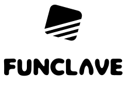

Funclave Inc.

We're an ambitious game studio, building the future of football management games.
We bring together a deep love of football, modern game design, and technology-driven creativity to create experiences for fans who think beyond the final score. Our goal is to make football management more intuitive, more immersive, and more emotionally connected - giving players the feeling of building a club, shaping a philosophy, and leading a team through every decision.
Inspired by the energy of global startups and powered by fast-moving creative culture, we're re-imagining what a football management game can be for the next generation of players.